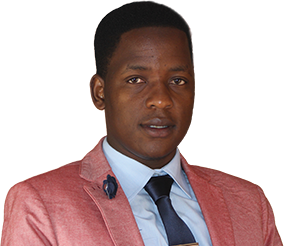

Mr Aaron Sigudla
(Chief Executive Officer)
aaron@sa-cbs.co.za
Profile
At CBS
He is the founding Director of CBS Pty (LTD), a company founded and registered in October 2016, serving in a capacity of a Chief Executive officer of the organisation responsible for proving a strategic direction of the company, also acting as the chairman of the Board. Mr Sigudla is also an executive member of Piennar young warriors of Christ Non-Profit Organisation which deals social ills affecting young people; he first served as an additional member of the committee, and now currently a Treasure of the organisation from February 2014 to date. Through his role in this community group, he has touched and influence many lives.
WORKING EXPERIENCE
He started working for Rotek engineering as an Artisan assistant from November 2011 to April 2012, He then joined the Mpumalanga department of education as an intern within the skills development planning unit from May 2012 to February 2013, He also was appointed as a Restaurant manager at McDonald SA at South gate mall, responsible for the day to day running of the store, which included; financial management, people’s management, sales and production. However he only spent 2 weeks on this portfolio, and then joined PC Training and Business College as Lecturer for Marketing, Business Management, Public Relations and Life Skills, where he acquired good facilitation and presentation skills, and he has seen his student flourishing with the knowledge he imparted. Furthermore he also worked for Statistics South Africa as a Training and Development officer at the National Office, responsible for managing the internal and external bursary scheme of the department. He was then promoted to a Senior Training Officer at the National Department of Social development, where he is responsible for managing the internship programme, as well as coordinating training and development initiatives identified by the organisation, he has been part of many projects in this portfolio, he been part of the task team that was developing the recruitment and retention strategy as well as the supervision framework for the social services practitioners and many more.